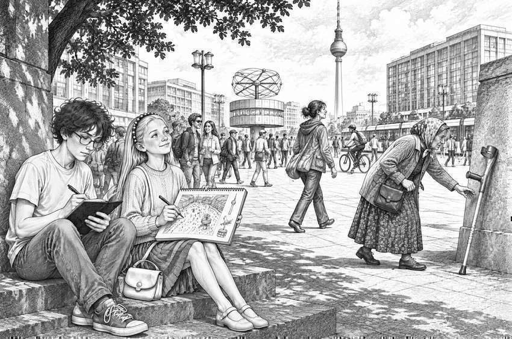

I gialli di Alvise · I libri · Volume 1

I gialli di Alvise · Volume 1 · Berlino
L’orologio di Alexanderplatz
Un giallo per ragazzi in venti capitoli, di Guido Costalonga
Quattro ore dopo era ancora lì. E il bambino non si era mai mosso.
Berlino, agosto. La famiglia Bertolin parte per nove giorni di vacanza: tre inalatori in valigia, un papà assessore che non riesce a staccare dal telefono, una mamma medico di pronto soccorso che vede tutto, due gemelle di nove anni che non potrebbero essere più diverse.
Alvise ha quattordici anni, i capelli rossi e un taccuino nero ancora quasi vuoto. Sotto l’orologio mondiale di Alexanderplatz il taccuino comincia a riempirsi: orari, posizioni, scarpe nuove tutte uguali, firme scritte tutte dalla stessa mano.
Per smascherare chi muove i fili non basta un ragazzo sveglio: serve una famiglia in cui ognuno guarda una cosa diversa e, per una volta, la dice agli altri.
Il libro in breve
Che cosa c’è da sapere
- Serie
- I gialli di Alvise, primo volume. Si può leggere da solo.
- Dove e quando
- Berlino, agosto. Nove giorni di vacanza.
- Capitoli
- 20, brevi, accompagnati da tavole a china.
- Età
- Dai 10 ai 14 anni.
- Genere
- Giallo per ragazzi, senza omicidi e senza scene di sangue.
- Autore
- Guido Costalonga. Prima edizione: 2026.
Dentro il libro
I 20 capitoli

- Quattro valigie e mezza
- L’orologio che dice tutte le ore
- Elisa apre la borsetta e la trova già aperta
- Emma dice che il tempo è sbagliato
- Il signor Kupka vende cartoline e consigli
- Le monete sul pavimento
- Il commissariato, ovvero il tedesco di papà
- Il fiato che non c’era
- Il turno delle nove e quaranta
- A cena si parla di ordine
- Elisa fa una cosa che non doveva fare
- Lo zaino numero 27
- Le domande del signor Kupka
- Tre colonne su un tavolo di formica
- Hauptkommissarin Brandt
- Il piano che papà è convinto di avere avuto
- Sabato, con le valigie
- Ventidue minuti
- Quello che c’era dietro la tenda di plastica
- L’ora di Berlino
Un assaggio di lettura
Il primo capitolo, per intero
«Quattro valigie e mezza» si può leggere tutto sul sito, anche con il righello di lettura e la voce.
La serie
Gli altri volumi
Ogni volume è una storia completa: stessi personaggi, città e caso nuovi.

Conosci la famiglia Bertolin · Vai ai giochi · Per genitori e insegnanti